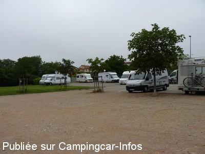
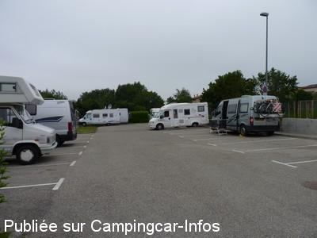
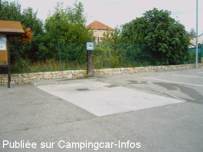

ASN = Aire de services avec stationnement nuit possible de :
SAINT GEORGES D'ESPÉRANCHE
(N° 527)
Accès/adresse :
Place des Picarnus
38790 SAINT GEORGES D'ESPÉRANCHE
38790 SAINT GEORGES D'ESPÉRANCHE
Latitude : (Nord) 45.55584° Décimaux ou 45° 33′ 21′′
Longitude : (Est) 5.0752° Décimaux ou 5° 4′ 30′′
Tarif : Gratuit
Type de borne : Plateforme
Services :


Poubelles
Autres informations :
12 emplacements, goudronnés, éclairés, sans ombre

Le 15/06/2010 par Xtian74

Le 15/06/2010 par Xtian74

Le 08/09/2006 par d.gryl
de
Petit René
le 09/11/2015 :
passé sur cette aire le 31/10 et le7/11/2015 calme et gratuite place pour 4 ou 5 CC maxi au fond de l'aire les autres à l'entrée pour les voitures .pas pratique pour vidanger si les CC sont garés trop près car il faut entrer sur le côté et en marche arrière .Commerces proche petite supérette .
passé sur cette aire le 31/10 et le7/11/2015 calme et gratuite place pour 4 ou 5 CC maxi au fond de l'aire les autres à l'entrée pour les voitures .pas pratique pour vidanger si les CC sont garés trop près car il faut entrer sur le côté et en marche arrière .Commerces proche petite supérette .
de
sigaud
le 26/07/2015 :
de passage le 24 juillet 2015, nous avons beaucoup apprécié cette aire qui est agréable, propre, proche du centre village.
de passage le 24 juillet 2015, nous avons beaucoup apprécié cette aire qui est agréable, propre, proche du centre village.
de
loulouttedu10
le 14/11/2012 :
avons passé la nuit dernière sur cette aire, pas mal, mais a vérifier car il semblerait que seules , les places non balisées soient pour les cc, près des autres places de P, ,juste a coté de la vidanges, il y a un panneau << stationnement interdit aux 3 T500 >> comment interpréter ce panneaux ?? places tres etroites, juste faites pour des voitures
enfin avons passé une bonne nuit calme
merci à la commune
avons passé la nuit dernière sur cette aire, pas mal, mais a vérifier car il semblerait que seules , les places non balisées soient pour les cc, près des autres places de P, ,juste a coté de la vidanges, il y a un panneau << stationnement interdit aux 3 T500 >> comment interpréter ce panneaux ?? places tres etroites, juste faites pour des voitures
enfin avons passé une bonne nuit calme
merci à la commune
de
Sombreffe
le 31/08/2011 :
Nous avons passé sur cette aire la nuit du 17 au 18 août.
Les emplacements sont effectivement étroits, mais comme nous étions seulement 3 CC à cet endroit cette nuit-là, ca n´a vraiment pas posé problème.
L´équipement pour les vidanges et eau fraîche est très pratique, dans la liste des meilleurs rencontrés jusqu´à présent.
Pour le calme on repassera cependant: la rue qui longe l´aire, bien que n´étant pas une nationale, semble être un axe fréquenté...et à vive allure par la plupart des automobilistes, réveil matinal assuré.
Nous avons passé sur cette aire la nuit du 17 au 18 août.
Les emplacements sont effectivement étroits, mais comme nous étions seulement 3 CC à cet endroit cette nuit-là, ca n´a vraiment pas posé problème.
L´équipement pour les vidanges et eau fraîche est très pratique, dans la liste des meilleurs rencontrés jusqu´à présent.
Pour le calme on repassera cependant: la rue qui longe l´aire, bien que n´étant pas une nationale, semble être un axe fréquenté...et à vive allure par la plupart des automobilistes, réveil matinal assuré.
de
Xtian74
le 13/06/2010 :
Sur cette petite aire sympathique, 16 emplacements sont délimités mais les emplacements sont étroits (prévus à l'origine pour des voitures ?), on n'y mettrait pas 16 CC. Au fond, de l'aire, quelques emplacements supplémentaires, non délimités...
Nuit tranquille en compagnie de 8 autres CC.
Sur cette petite aire sympathique, 16 emplacements sont délimités mais les emplacements sont étroits (prévus à l'origine pour des voitures ?), on n'y mettrait pas 16 CC. Au fond, de l'aire, quelques emplacements supplémentaires, non délimités...
Nuit tranquille en compagnie de 8 autres CC.
de
Jacques ETILLIEUX
le 15/05/2010 :
Très bel aménagement. Durant la nuit, nous avons été réveillés à cause de l'incendie de 4 voitures garées sur le parking à proximité de l'école maternelle. Si heureusement, les pompiers sont intervenus rapidement, aucun signe présent de la gendarmerie ! Non rassurés, les 9 campings-cars présents n'ont pas été touchés. Pourtant, il s'agit d'un parking surveillés par des caméras. Quelle efficacité !
Très bel aménagement. Durant la nuit, nous avons été réveillés à cause de l'incendie de 4 voitures garées sur le parking à proximité de l'école maternelle. Si heureusement, les pompiers sont intervenus rapidement, aucun signe présent de la gendarmerie ! Non rassurés, les 9 campings-cars présents n'ont pas été touchés. Pourtant, il s'agit d'un parking surveillés par des caméras. Quelle efficacité !
de
paret jean-claude
le 19/03/2009 :
Très bon coin pour se reposer, commerces à proximité, aire très bien située, bravo! camping cariste d'auvergne
Très bon coin pour se reposer, commerces à proximité, aire très bien située, bravo! camping cariste d'auvergne
de
pataille
le 19/04/2008 :
Très bien: pelouse, grand parking, près des commerces, tous services et gratuité. Merci à cette commune pour son accueil.
Très bien: pelouse, grand parking, près des commerces, tous services et gratuité. Merci à cette commune pour son accueil.
de
sylvie et gilles
le 11/04/2007 :
Endroit très agréable avec pelouse pour les enfants, terrain de pétanque et commerçants à proximité.
Endroit très agréable avec pelouse pour les enfants, terrain de pétanque et commerçants à proximité.